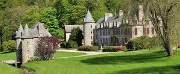
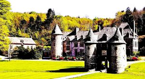
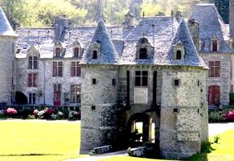
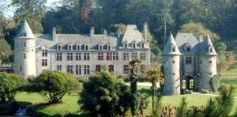
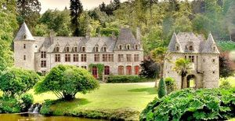

Recensement Jean-Claude Truffet
| Département | 50 — Manche |
| Canton | La Hague |
| Commune | Urville-Nacqueville |
| Type d'édifice | Château |
| Période d'origine | XVI |
| Coordonnées GPS | 49° 39' 44" Nord, 1° 43' 23" Ouest |





NACQUEVILLE, cest Jean V de Grimouville qui bâtit le premier château, au début du XVIe siècle. Demeurée dans cette famille jusquen 1685, la propriété est achetée par Bernardin Mangon, sieur du Coudray, en 1689. Le nouveau maître des lieux, souhaitant mettre la vieille demeure au goût du jour, fait reconstruire laile droite du logis et abattre les hautes murailles dont il conserve toutefois la poterne dentrée. Transmis par héritage, Nacqueville échoit, en 1833, à Emilie Erard de Saint-Rémy qui épouse peu après Hippolyte Clérel, comte de Tocqueville. A cette époque, latmosphère du domaine est encore champêtre. Le manoir apparaît comme un corps de ferme qui ne sinscrit pas encore dans un cadre paysager. Le comte de Tocqueville fait reconstruire la partie centrale du château et fait appel à un paysagiste anglais pour créer un parc romantique autour. Après la modification du tracé de lallée dentrée, sur le coteau nord, les travaux commencent vers 1835. Les cours deau sont utilisés pour aménager des cascades et une fontaine, létang est recentré pour devenir le miroir des bâtiments. De vastes pelouses, plantées darbres dornement, de rhododendrons et dhortensias, entourent lensemble. La vallée, en aval, est dégagée pour offrir une perspective vers la mer, tandis que les coteaux environnants sont plantés de feuillus et de conifères. Lécrin du château semble enfermé, tel un îlot de calme et de beauté, dans une couronne boisée qui lisole du monde. Il ne se découvre quau débouché de la longue allée dentrée, bordée de pins, en un seul coup dil embrassant tout le panorama.
NACQUEVILLE, en 1857, Après les décès dHippolyte de Tocqueville et de son épouse, le domaine est acheté, en 1880, par Hildevert Hersent, ingénieur en hydraulique renommé. Celui-ci modernise le château et améliore le système hydraulique en régulant les eaux par une série de barrages et de vannes. Hildevert Hersent fait construire, à lentrée du parc, un pavillon de concierge et un lavoir en rocaille sur la rivière des Castelets. Près du château, des rocailleurs sont mis à contribution pour embellir les cascades, créer une grotte et bâtir un kiosque dans les bois. En 1919, le domaine revient à lun de ses fils, Jean Hersent, qui entretient la propriété jusquà la seconde guerre mondiale. En 1943, le château est occupé par larmée allemande. En 1944, larmée américaine bouleverse le parc pour y installer un état-major et des baraquements de GIs. Les pelouses sont nivelées, la rivière canalisée est recouverte, 20 hectares de prairies sont transformés en cité et un camp de prisonniers est installé sur le plateau en lisière des bois. En 1946, Marcel Hersent récupère la propriété dans un état catastrophique. Le château est en ruine, le parc est saccagé et les bois sont très endommagés. Pendant plus de 10 années, il va sattacher à effacer les dommages causés par la guerre. En 1962, fier de son uvre, il ouvre le parc au public. Demeuré dans la famille Hersent, le château de Nacqueville retrouve peu à peu son ambiance originelle, grâce aux efforts accomplis, depuis la guerre, par les générations successives. Éléments protégés MH : la porte à pont-levis flanquée de deux tours: inscription par arrêté du 16 mai 1944. Le parc avec l'ensemble de ses aménagements hydrauliques : inscription par arrêté du 20 novembre 1992.
famille Grimouville et famille Hersent
"
Nacqueville GPS : 49° 39' 44" Nord, 1° 43' 23" Ouest